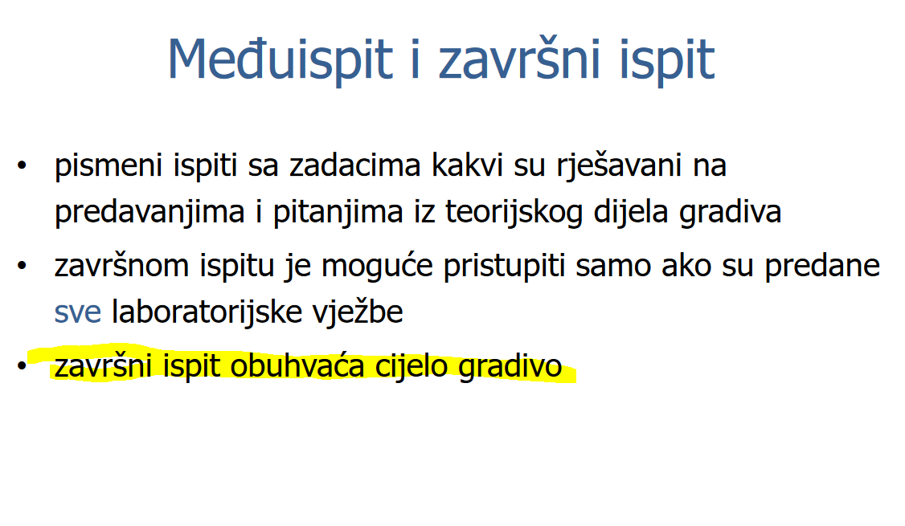

Je li u ZI ulazi samo drugi ciklus ili obuhvaca citav semestar?
anon00 
Dragi prijatelj strojnog učenja Imao i ja isto pitanje pa mi kolegao ubio sve nade KiflaKiflic I kao da to nije dovoljno Mićo me kaznio i premjestio mi post u drugu temu
Koja nam onda sve poglavlja iz knjige ulaze u ZI (gledano na 2. ciklus, za 1. znamo)
Avendo 11. i 12. cjelina bi trebale biti
Jel baš svo gradivo iz 11.cjeline iz knjige ulazi? Čini mi se da dosta toga nismo spomenuli, a ni u prezentacijama nema.
Artemis ravnaj se po prezentacijama
Jel moramo za ispit znat i ulazno izlazne naprave
Sulejman Bojim se da da
jel kaj golub spominjao koji udio ispita će biti 1. ciklus? jel mogu doci npr lamport/ricart agrawala?
tomekbeli420 vrlo vjerojatno ce doci, i u proslom ZI-u je doslo
Na kolko se nacina u zadnjem moze dogodit da 4 diska krepaju a da sustav nije u kvaru
steker mislim da su na 2. Prvi ako prva grupa ode a drugi ako druga grupa ode
steker 2 slucaja. Svi diskovi jedne ili druge grupe mogu biti pokvareni. Ak se desi bar 1 kvar u svakoj grupi, sustav je u kvarnom stanju
Ima u prezentaciji na dnu
Dragi prijatelj strojnog učenja al sta nije da se moze npr 3 iz jedne grupe i 1 iz druge pokvarit bez da se gube podatci? 8 povrh 4 je mogucih kombinacija
hellvetica mislim da je to za raid 10. Mozda grijesim
hellvetica raid 0+1 tako ne funkcionira tj kod raid-a 0 cim jedan disk ode cijela grupa vise ne valja
Jel vam mttfs u predzadnjem ispao 608 godina ili sam ja nesto jako krivo
Daeyarn mislim da je to ok. Ja sam uzeo da je N=6 sto vjv nije dobro
Daeyarn tak je i meni
Daeyarn koja je formula za izracunat to ako se sjecas?